Beautiful Soup
What is Beautiful Soup and why is it used?
According to crummy.com, "Beautiful Soup is a Python library designed for quick turnaround projects like screen-scraping." It provides methods for navigating, searching and modifying a parse tree, which is a "toolkit for dissecting a document and extracting what you need." It also only takes a small amount of code to write an application and saves time on projects that would take hours to get data.
Beautiful Soup has been used for several projects. The following examples are all listed on crummy.com
- "Movable Type", a work of digital art on display in the lobby of the New York Times building, uses Beautiful Soup to scrape news feeds.
- Reddit uses Beautiful Soup to parse a page that's been linked to and find a representative image.
- Alexander Harrowell uses Beautiful Soup to track the business activities of an arms merchant.
- The developers of Python itself used Beautiful Soup to migrate the Python bug tracker from Sourceforge to Roundup.
- The Lawrence Journal-World uses Beautiful Soup to gather statewide election results.
- The NOAA's Forecast Applications Branch uses Beautiful Soup in TopoGrabber, a script for downloading "high resolution USGS datasets."
Where to get Beautiful Soup
In order to get Beautiful, you can download the latest version from crummy.com. For in-depth instructions on installing Beautiful Soup on a mac, visit the J242 GitHub page.
What is needed to make the tool work (software, downloads, libraries, etc.) and where you get that
- Python and Beautiful Soup
- Text Editing Program (Like Textwrangler)
- Data Spreadsheet (Google Spreadsheets, Excel, etc.)
- Adobe Illustrator
Python is needed in order to use Beautiful Soup, which is already on macs, but needs to be installed through the computer terminal. To find the terminal on a mac, go to Applications > Utilities > Terminal. If you do not have Python, the latest version can be downloaded at python.org.
To download a text editing program on a mac, visit the App Store and search for Textwrangler, etc.
To use Google Spreadsheets visit here. You have to have a Gmail account to use Google Spreadsheets. To use Excel you have to buy a download for it.
Adobe Illustrator requires a subscription in order to download the software.
Example: Mr. Map Generator
Mr. Map Generator, a web application created by The Boston Globe designer and graphic artist Patrick Gavin, is an example of a data map generator. Mr. Map Generator is an alternative to using Python and Beautiful Soup to create interactive, data driven maps of the United States. Mr. Map Generator also uses even less code than Beautiful Soup, which is also generated for you in the process of making the map.
A live example of a choropleth map created using Mr. Map Generator can be viewed at bostonglobe.com, which displays health law coverage throughout the United States. This map is related to The Boston Globe article, Health law coverage can be tough sell in some states.
Gavin, the creator of Mr. Map Generator, has also posted a tutorial on how to use your own SVG on his blog.
To use Mr. Map Generator, you first have to visit Mr. Map Generator. The site walks you through step-by-step on how to create a choropleth map using your own data.
- Step 1: Format Data
- Step 2: Paste the Data
- Step 3: Select Data Set
- Step 4: Choose the Column Wanted
- Step 5: Select the Shading Color
- Step 6: Select Number of Shades Wanted
- Step 7: View Map
For this step, Mr. Map Generator asks you to format your data in columns in order first by state postal codes, state names, and then any other data in the following columns. To make this step easier, Mr. Map Generator allows you the option to download a zip for responsive files or an Excel template for a print map.
Once your data is formated in Excel or Google Spreadsheets, you then copy and paste it back into Mr. Map Generator's site
Click this button to move on to the next step.
Now you choose what column in your data set you would like the map to focus on - there should be column options.
Choose from red, green, blue, yellow or purple for the color of the map.
The amount of shades goes up to 5.
After submitting your input and information for the map, you are able to view the outcome.
To wrap up this example, it can clearly be used to create choropleth maps by simply inputing data to transform data driven stories into data driven, visual stories.
Walk the reader through an example - show how to do something basic with the tool (include coding samples)
Project Walk Through
While using python and Beautiful Soup to create my project (a choropleth map of total employment for graphic designers in the United States) I had to have a few things to start off:
- Data
- Text Editor
- Code
Code Breakdown
- 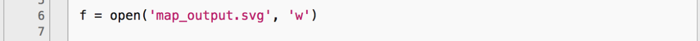
In line 6, the code is creating 'map_output.svg' and 'w' is writing the extracted data into it in order to shade the states.
- 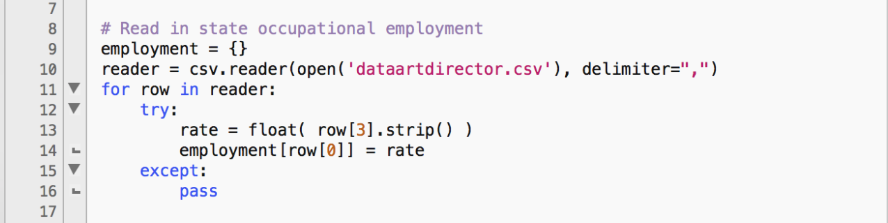
In line 10, the code is opening 'dataartdirector.csv' and reading the data. Line 13 is reading a specific row [3] and seeing that anything else that isn't row three it doesn't need. Line 14 is is taking the information it read in row 3 and seeing that the employment[row[0]] is equal to rate, which allows the computer to use later to write in the data when it comes to shading the states. If anything in the files don't match what the code is looking for, it passes it and goes on.
- 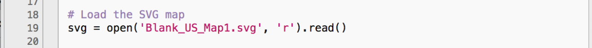
In line 19, the code is opening the SVG file 'Blank_US_Map1.svg' and reading the code information from it in order to apply the previous data to this SVG file.
- 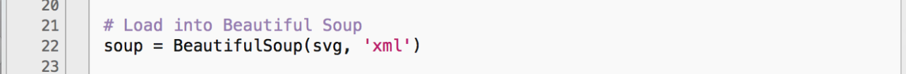
In line 22, the code is loading the data from the SVG file and the XML file into Beautiful Soup so the data can be combined into a new SVG file.
- 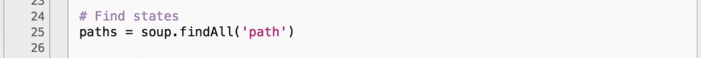
In line 25, the code is telling Beautiful Soup to findAll the paths (state outlines) in the files.
- 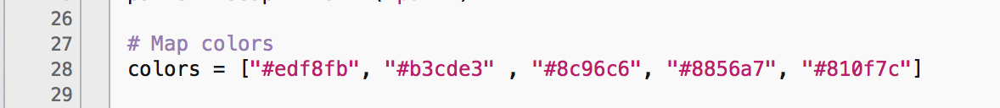
In line 27, the code reads that the colors that will be used in the map for shading are equal to the hex colors inside the [brackets]
- 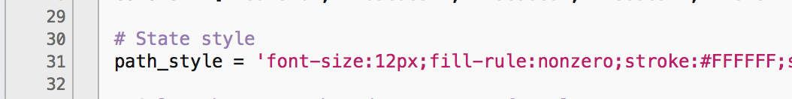
In line 31, the code reads that the path_style, or the style of the state outlines are being set.
- 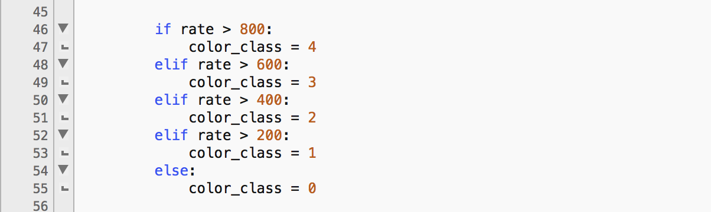
In line 46, the code is giving an if/else (elif) statement that tells the computer to look at the rate number in the data and comparing it to see if it is greater than 800. If it is then the color_class is 4; if it isn't then it moves on to the elif comparing the number from the data to see if it is greater than 600. Again, if it is then the color_class = 3; if it isn't it moves on to the next until it matches the number to a color_class.
- 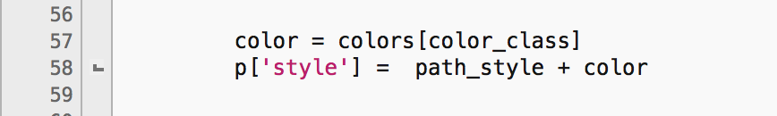
In line 57, the code reads that the color is equal to colors[color_class], which makes the computer go back and match the data that was compared and matched in the if/else statement to the hex colors in line 27.
- 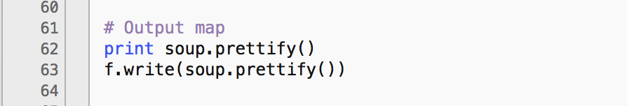
In line 63, the code is telling Beautiful Soup to output the new map that is filled in with the data and shading.
- Blank SVG file of the U.S.

For each of the paths (or states) I had to go in an rename them to match their postal abbreviation code. So in the photo you see that the California path is now named as CA.
- Terminal
Obviously, to create a data map I needed data. I searched the Bureau of Labor Statistics and found data for all 50 states from May of 2014 here. I then took that data and found the information I needed, which was the state abbreviations, the state names and total employment for graphic designers in all the states. Once I gathered that information, I made a separate csv (comma separated values) file so I could run it in my python code.
If I wanted to run any kind of program I needed a text editor. I have TextWrangler, which I had already downloaded from the app store for previous projects.
Once I had my data the way I needed it and I had my text editor ready to go, I then found an example of how to create a choropleth map with Python and Beautiful Soup. I followed the instructions, although the example map used county data and SVG file, instead of states data and SVG file.
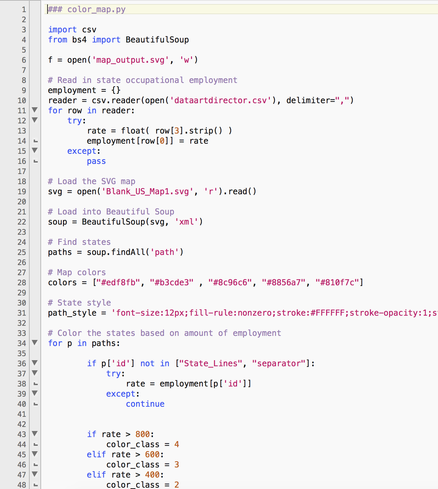This is where it got a little tricky: I had to find a different SVG (Scalable Vector Graphics) file, which is basically the vector version of a jpeg only it allows the opportunity for interactivity and animation. By using a different file I had to manually go in and change layer names of each state and turn each state outline into a "compound path," which allows me to identify what path I am working with when editing the code in Python and makes a state line one connected path instead of several disconnected paths. By making outline paths of each state, it allows the code to run and shade the states by the data that goes with each of them.
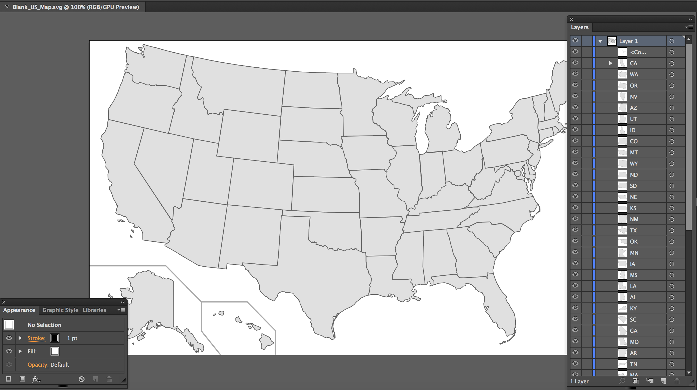In order to test the code and make sure everything ran smoothly, I had to use the terminal on my mac (which I mentioned before). I had to change the directory to the folder I saved everything in and then I had to tell the terminal that I wanted it to run my python file, which is named color_map.py. So this is what I typed: cd ~/Desktop/foldername (hit enter) python color_map.py (hit enter again) and VIOLA! It ran and showed any errors that i need to fix.
Once I figured out what all I needed to use and how to run my code, I was ready to make sure my map actually showed up and worked, which is when I use the terminal, check to make sure the new SVG file shows up in my folder, and pull the file into Illustrator.
Limitations of the tool
A major limitation I ran into with Python was the the indentation of the code. If an indented line was off Python refuses to run that portion of the code and gives an error message in the terminal (where you run the code) identifying what is wrong.
Another limitation I had trouble with did not deal with Python or Beautiful Soup, but Adobe Illustrator. Whenever I tried to save an SVG file after editing it by making states compound paths, Illustrator would quit without saving any of my work. This disrupted my work for my project, but I was able to get around it by searching for different vector files of the U.S., which I was able to save and piece together by copying and pasting once I found files that included compound paths of the states.
# include the data visualization you created using this tool - host this on your iweb account